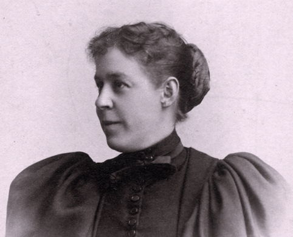

-1-MasterItem.svg)
Stories of Westminster United Church & its People / Page
21
Table
of Contents
MINNIE JULIA BEATRICE CAMPBELL, COMMUNITY ACTIVIST
By the end of her life, Minnie was lauded not only as one of Canada’s
foremost reformists, but also as one of Canada’s best-known women.
Through her charitable activities over five decades she worked to provide
lodging, food, and medical care to Winnipeg’s poor and sick, and promoted
the active participation of women in public life, if largely by example (she
was decidedly not a suffragette, and said so publically). Her activism, like
that of many of her reform-minded peers, was animated by more than a
little imperialist sentiment. Biographical accounts depict Minnie as inclined to
see the poverty and
“coarseness” that she encountered in the grubby frontier-town of Winnipeg as emanating from
the
personal failings of its inhabitants, and she never hesitated to preach
Christianity as a path not only
to spiritual redemption, but also to civility and social betterment. Giving
energetic voice to a view
shared with growing complacency by many of the Anglo-Protestants elites of her
day, Minnie firmly
associated the spread of civilization with the spread of Christian culture. As a
privileged member of
this culture living in a rugged, religiously pluralist environment, she further
believed it her duty to
serve as its ambassador. The nature of many her charitable activities — organizing essay contests
about important colonizers, introducing “moral instruction” as a component of the Winnipeg General
Hospital’s care for its indigent patients, delivering presentations promoting the Empire
and the
civilized standards of behaviour with which it was associated — reflects that conviction; as did her
penchant for speaking in an affected English accent and holding balls that
imitated the styles of the
imperial capital.
Back to Minnie: born in Palermo, Ontario, in June 1862, she was the daughter of
Dr. Anson Buck and
Keturah Adelaide Howell, both descendants of United Empire Loyalists. Buck was
proud of his loyalist
heritage, as he was of his connection to leading reformers in England. Minnie’s upbringing was rather
liberal by the contemporary standards: she claims that her father was of a “progressive mindset,”
firmly believing that “boys could do anything girls could.” All the same, Minnie was not sent to the
prestigious professional schools of the University of Toronto, but rather to
Wesleyan Female College,
where she studied mathematics, classics, science, art and music. Her education
may therefore have

Our Founders